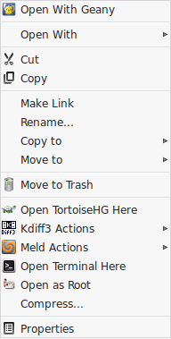

nemo pyextensions
| It’s a graphical handler of the nemo/caja/nautilus file manager python extensions, including some useful pyextensions. Written by Giuseppe Penone (aka giuspen). The following languages are supported:
|
graphical handler instructions graphical handler download included python extensions manually install a pyextension dev. versions |
|  |
graphical handler instructions :
add – opens a dialog to add a new pyextension into the system
checkbox active – when checked, the pyextension is active in the nautilus right click menu (visible after killing…)
kill – needed to restart nautilus, to use after checkings/uncheckings
export – to export a pyextension from the system to the chosed directory
edit – to edit a pyextension from inside of the system
delete – removes a pyextension from the system
source code :
nemo-pyextensions-3.4.2.tar.xz (for nemo),
caja-pyextensions-3.4.1.tar.xz (for caja),
nautilus-pyextensions-3.4.1.tar.xz (for nautilus 3),
nautilus-pyextensions-1.2.2.tar.gz (for nautilus 2)
debian/ubuntu package :
nemo-pyextensions_3.4.2-1_all.deb (for nemo),
caja-pyextensions_3.4.1-1_all.deb (for caja),
nautilus-pyextensions_3.4.1-1_all.deb (for nautilus 3),
nautilus-pyextensions_1.2.2-1_all.deb (for nautilus 2)
resides in applications–accessories–nemo/caja/nautilus pyextensions
open-terminal-here.py [nemo / caja / nautilus 3 / nautilus 2] allows to open the terminal window on the selected folder/current directory, with the right-click;
tortoisehg-here.py [nemo / caja / nautilus 3] allows to open the TortoiseHG Workbench on the selected folder/current directory with the right-click;
set-as-desktop-background.py [nautilus 2] allows to set as desktop background the selected image file with the right-click;
open-as-root.py [nemo / caja / nautilus 3 / nautilus 2] allows to open the selected file/folder as root user, so having administrator rights;
add-to-audacious-playlist.py [nemo / caja / nautilus 3 / nautilus 2] allows to add all the selected audio files to the audacious playlist with the right-click;
meld-compare.py [nemo / caja / nautilus 3 / nautilus 2] and kdiff3-compare.py [nemo / caja / nautilus 3 / nautilus 2] allow to compare two selected files/folders with meld and kdiff3. meld is the best with files comparison while kdiff3 is the best with folders comparison; the kdiff3 version that is automatically installed when you activate kdiff3-compare is “kdiff3-qt”, which is independent from the kde desktop;
 replace-in-filenames.py [nemo / caja / nautilus 3 / nautilus 2] allows to replace some text with other text in all the filenames of the current directory.
replace-in-filenames.py [nemo / caja / nautilus 3 / nautilus 2] allows to replace some text with other text in all the filenames of the current directory.
how to manually install a python extension :
in order to manually install a python extension to nemo (or caja or nautilus):
1) install the package “python-nemo” (or “python-caja”or “python-nautilus”)
sudo apt-get install python-nemo
2) enter in the home directory, press ctrl+h to see the hidden files, enter in the folder “.local/share” and then create a folder named “nemo-python” (ctrl+shift+n, “caja-python” for caja, “nautilus-python” for nautilus) then in nemo-python create a folder “extensions“
3) download the python file (“.py”) and put it in the directory “~/.local/share/nemo-python/extensions” just created
4) put the following in the terminal (to restart nemo)
killall nemo
development versions :
the source code is version controlled with git and hosted by github.
you can get a clone of the nemo-pyextensions git repository issuing the command:
git clone https://github.com/giuspen/nautilus-pyextensions.git git_nemo-pyextensions
cd git_nemo-pyextensions
git checkout cinnamon-nemo
./nemo-pyextensions
NOTE: to interface with the git repository with mercurial and hg-git:
hg clone git://github.com/giuspen/nautilus-pyextensions.git hg_caja-pyextensions
cd hg_nemo-pyextensions
hg update cinnamon-nemo
./nemo-pyextensions
that will create a folder named git_nemo-pyextensions in the terminal working directory, enter into it and run nemo-pyextensions development version.
in order to update the local repository with the server repository updates you don’t need to “git clone” all the time but simply run the following command from a terminal whose working directory is git_nemo-pyextensions:
git pull